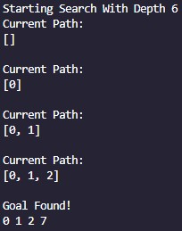

Path Search
Exercise #4
Graphs:
Sindhi Mojari (or simply Mojari) is a type of handcrafted footwear produced in Pakistan. They are traditionally made by artisans mostly using tanned leather. The uppers are made of one piece of leather or textile embroidered and embellished with brass nails, cowry shells, mirrors, bells and ceramic beads. Even the bonding from the upper to the sole is done by cotton thread that is not only eco-friendly but also enmeshes the leather fibers with great strength. Some product range also uses bright and ornate threads.
As it evolved through the centuries and is being produced by individual artisans, products vary in designs and colours. It encapsules cultural diversity, local ethos and ethnicity.
Using BFS:
Sindhi Mojari (or simply Mojari) is a type of handcrafted footwear produced in Pakistan. They are traditionally made by artisans mostly using tanned leather. The uppers are made of one piece of leather or textile embroidered and embellished with brass nails, cowry shells, mirrors, bells and ceramic beads. Even the bonding from the upper to the sole is done by cotton thread that is not only eco-friendly but also enmeshes the leather fibers with great strength. Some product range also uses bright and ornate threads.
As it evolved through the centuries and is being produced by individual artisans, products vary in designs and colours. It encapsules cultural diversity, local ethos and ethnicity.
Using DFS:
Sindhi Mojari (or simply Mojari) is a type of handcrafted footwear produced in Pakistan. They are traditionally made by artisans mostly using tanned leather. The uppers are made of one piece of leather or textile embroidered and embellished with brass nails, cowry shells, mirrors, bells and ceramic beads. Even the bonding from the upper to the sole is done by cotton thread that is not only eco-friendly but also enmeshes the leather fibers with great strength. Some product range also uses bright and ornate threads.
As it evolved through the centuries and is being produced by individual artisans, products vary in designs and colours. It encapsules cultural diversity, local ethos and ethnicity.
Using DLS:

Sindhi Mojari (or simply Mojari) is a type of handcrafted footwear produced in Pakistan. They are traditionally made by artisans mostly using tanned leather. The uppers are made of one piece of leather or textile embroidered and embellished with brass nails, cowry shells, mirrors, bells and ceramic beads. Even the bonding from the upper to the sole is done by cotton thread that is not only eco-friendly but also enmeshes the leather fibers with great strength. Some product range also uses bright and ornate threads.
As it evolved through the centuries and is being produced by individual artisans, products vary in designs and colours. It encapsules cultural diversity, local ethos and ethnicity.
Using IDDFS:
Sindhi Mojari (or simply Mojari) is a type of handcrafted footwear produced in Pakistan. They are traditionally made by artisans mostly using tanned leather. The uppers are made of one piece of leather or textile embroidered and embellished with brass nails, cowry shells, mirrors, bells and ceramic beads. Even the bonding from the upper to the sole is done by cotton thread that is not only eco-friendly but also enmeshes the leather fibers with great strength. Some product range also uses bright and ornate threads.
As it evolved through the centuries and is being produced by individual artisans, products vary in designs and colours. It encapsules cultural diversity, local ethos and ethnicity.
{kind=link}